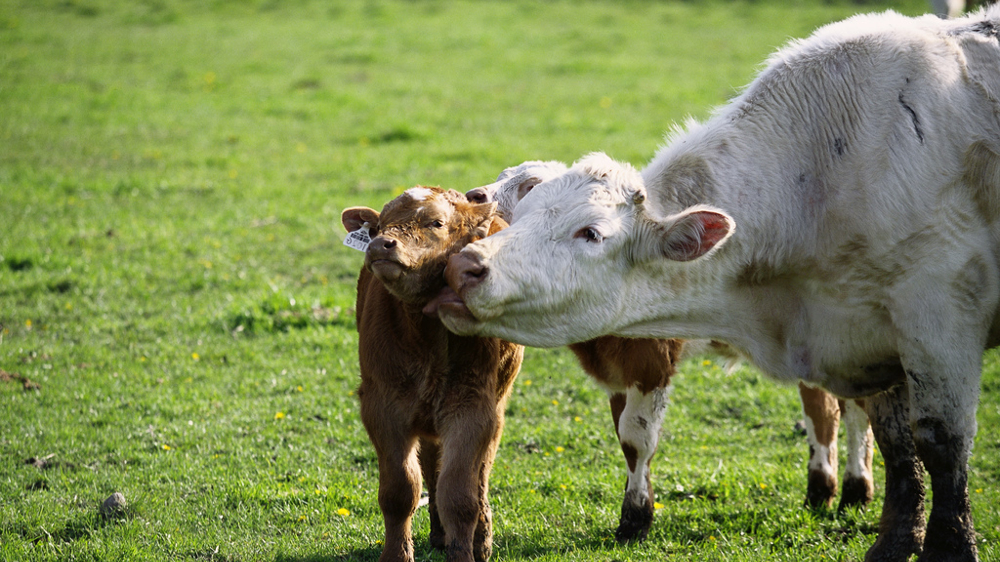

Animal husbandry is the science and art of raising and caring for livestock. The field is inextricably linked to geography.

The geographical environment in which livestock are kept affects all aspects of their management,
productivity, and welfare. Geography, especially geoinformatics,
is the technology of collecting and processing information from spatial and non-spatial data.